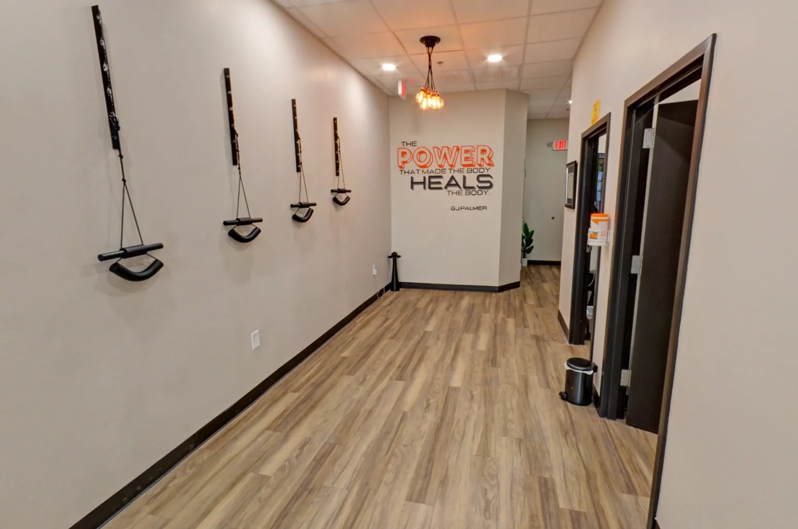

Chiropractic adjustments restore proper spinal alignment. Corrective exercises help the body maintain it. Together, they address the structural and muscular patterns that often drive recurring pain and limited function.
Posture is more than how someone looks standing still. It can reflect spinal structure, muscle tension, movement habits, and stress patterns in the body. We evaluate posture as part of the bigger picture of how the spine and nervous system are functioning.
Corrective exercises are designed to directly address those imbalances. By strengthening weak muscles and releasing tight ones, they help the body hold chiropractic corrections for longer, reducing how often adjustments are needed and improving the durability of results over time.
At Life Charge Chiropractic, corrective exercise programs are personalized. Dr. Palmer performs a thorough assessment to identify the specific imbalances affecting your body, then creates a program tailored to your structure, fitness level, age, and goals, with clear instructions and demonstration so you can perform each exercise correctly.
Schedule First VisitWe understand that adding a new routine to a busy life takes real effort. Every corrective exercise program at Life Charge is designed to be practical, exercises that are clear, easy to follow, and realistic given your schedule.

"An adjustment addresses the spine. Corrective exercises address what keeps pulling it back. Both are part of a complete plan, and both are always based on what your body actually shows in the exam."— Dr. Palmer Piana, Life Charge Chiropractic
Schedule your first visit at Life Charge Chiropractic in Gallatin, TN. We start with a thorough exam, then build a plan around what we find.
Schedule First Visit